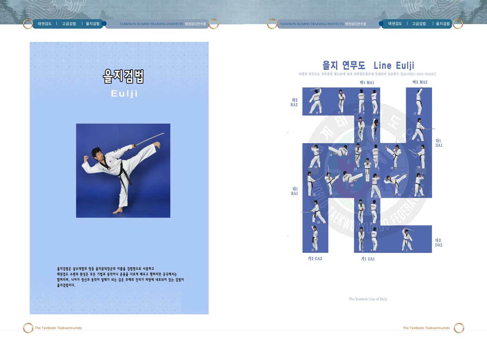
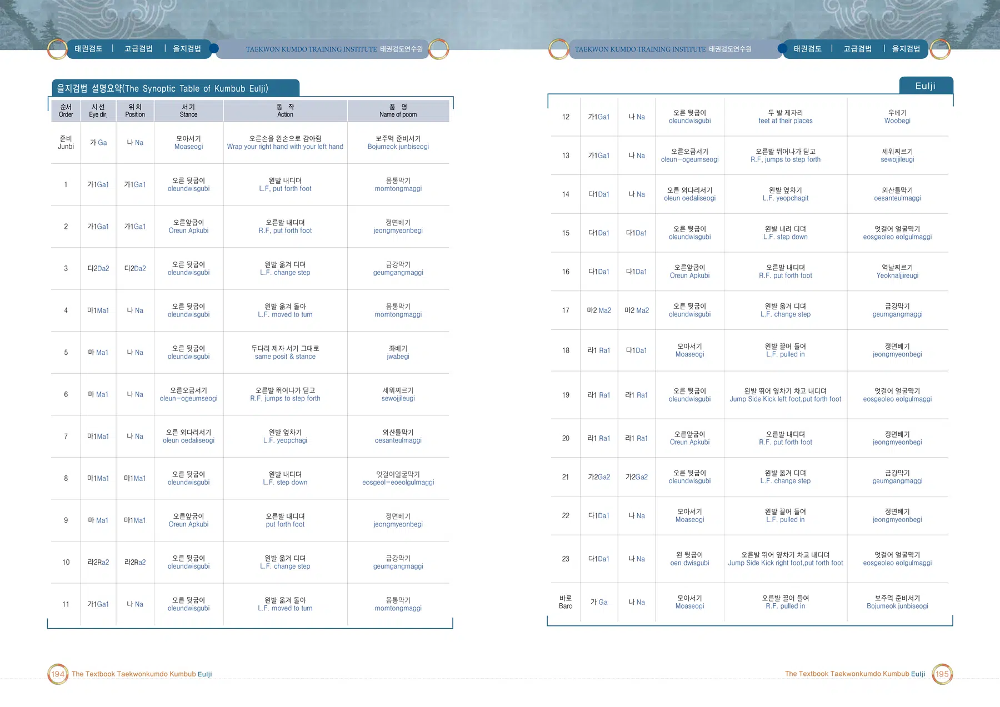
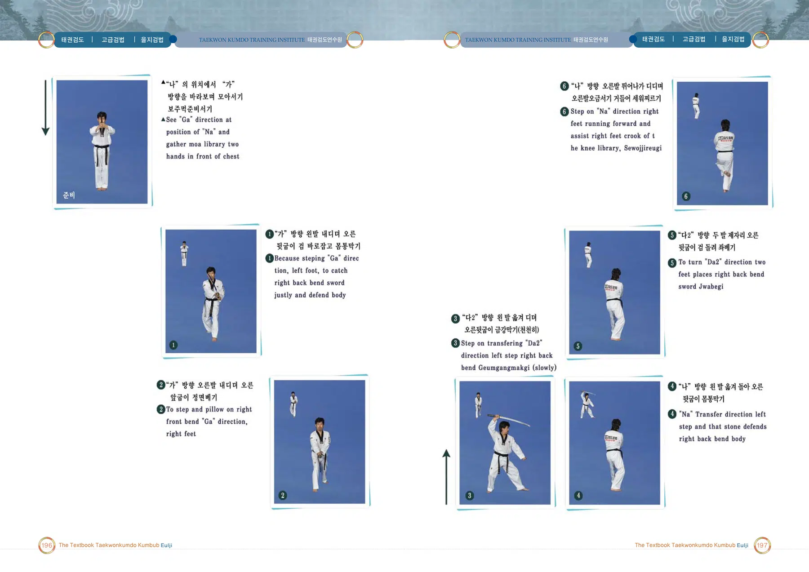
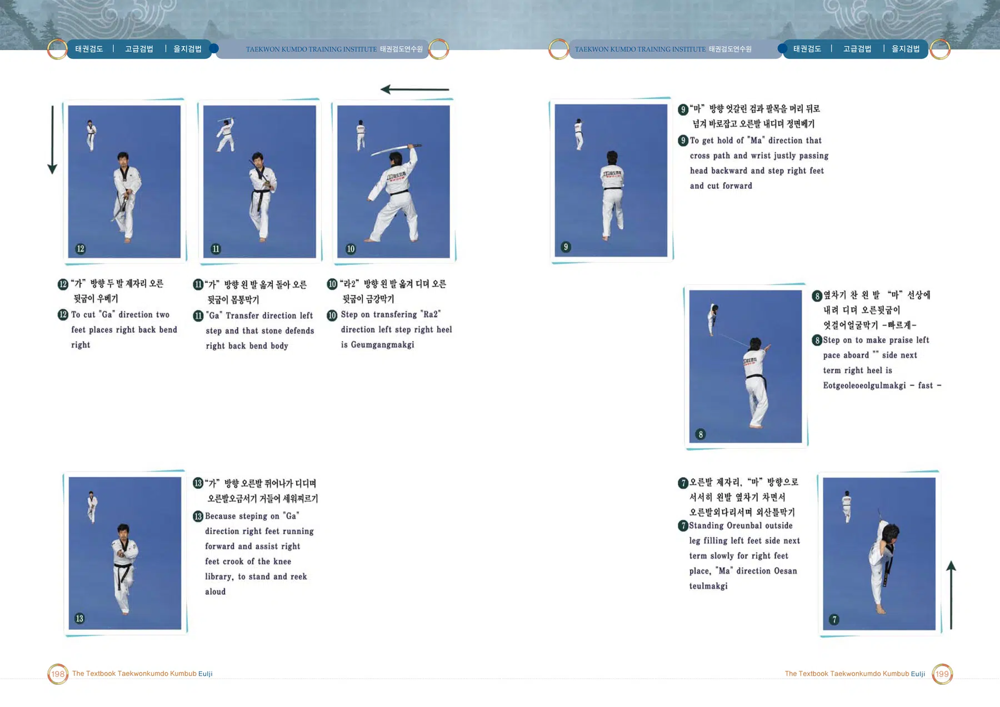
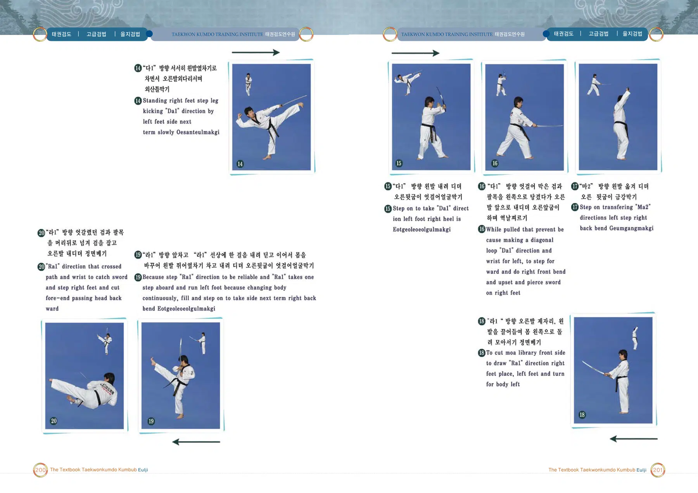
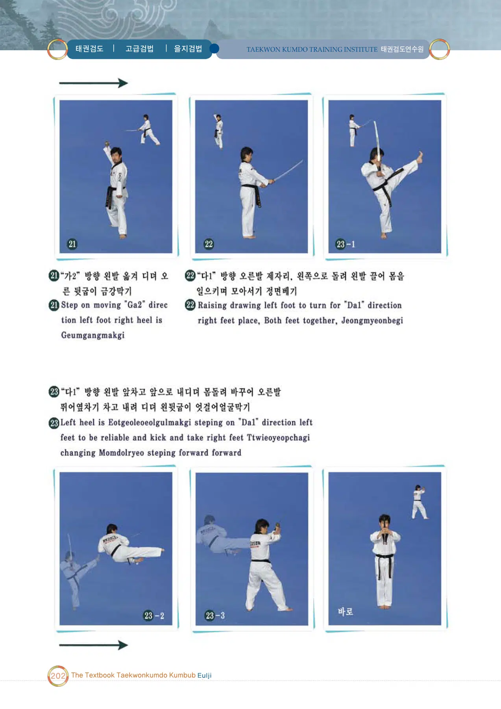

을지검법
을지문덕 장군의 이름에서 따온 검법
출처: 태권검도 교본. 아래 설명은 제공된 초안의 뜻풀이 요약이며, 원문은 교본 이미지에서 확인할 수 있습니다.
을지검법의 뜻과 상징
을지문덕 장군의 이름을 명칭으로 사용한다. 다양한 검법의 운용이 하나로 합쳐지고 정신과 동작이 일체가 되는 무예의 이치를 표현한다.
태권검도 교본 인쇄 306쪽의 설명을 바탕으로 요약한 해설입니다.
을지검법 교본 자료
이미지를 누르면 확대됩니다. 확대 화면에서는 좌우로 이동하여 동작과 설명을 확인하세요.





